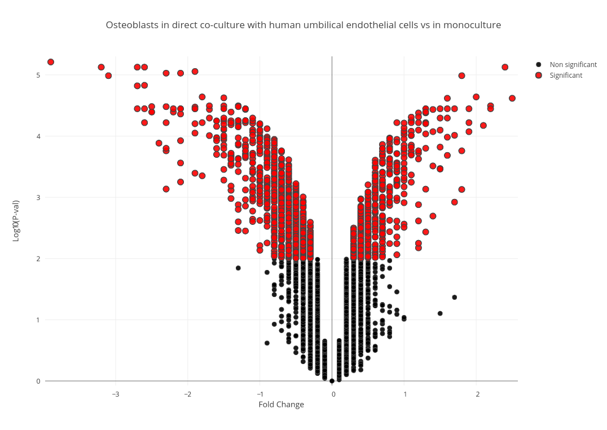
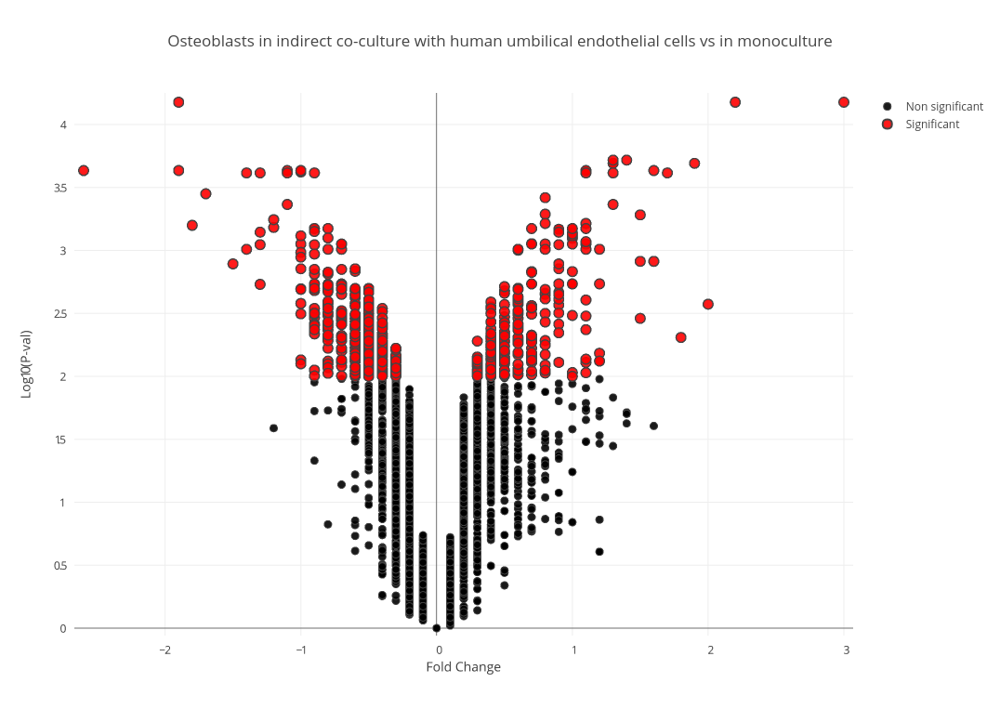
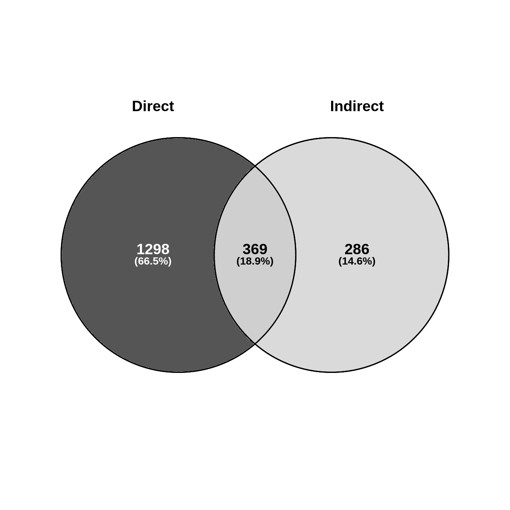
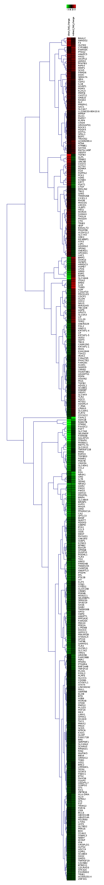
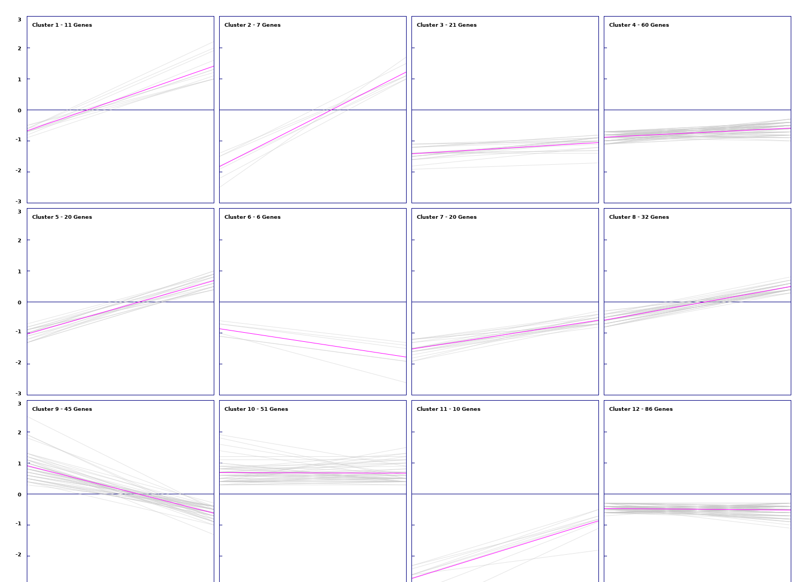
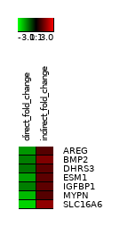
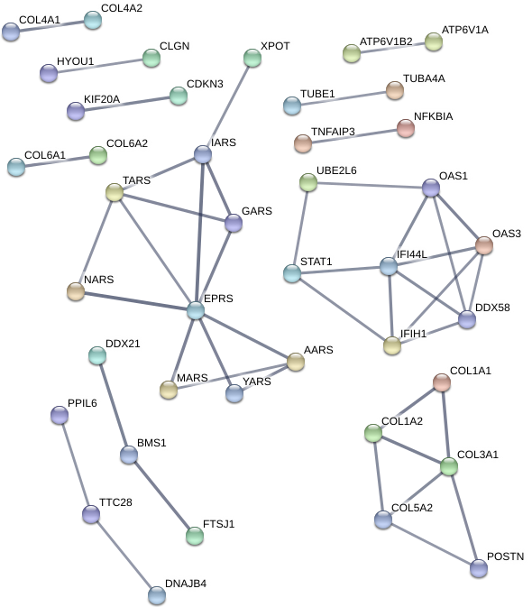
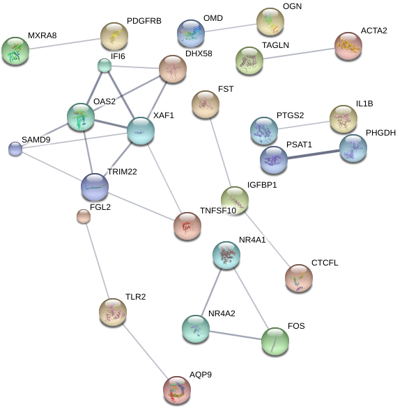
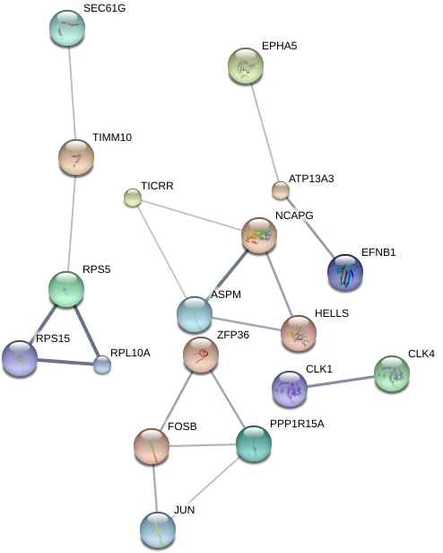

Sample Analysis 1: Osteoblast Dataset
Analysis was done on a data set containing expression data from a set of human osteoblasts that were raised in direct co-culture with umbilical vein endothelial cells, and a set of human osteoblasts raised in indirect co-culture with umbilical vein endothelial cells to find genes expressed differentially in each condition.
Dataset Download »
The data set contained normalized fold change values and adjusted p-values for each condition against a set of osteoblasts raised
in monoculture. Due to the large sample set, a p-value of 0.01 was used to identify differentially expressed (DE) genes.
Using
this python script »
and the Plot.ly library, significant data points were filtered and the plots in figure 1 were drawn for each
condition, with significant data points being represented in red. Upon filtering, 1,668 genes from the direct co-culture condition and 656 genes from the indirect condition were deemed DE.


Figure 1 (A): Volcano Plot of Fold Change in Direct Condition
Selected genes that were differentially expressed in only the direct co-culture, the indirect co-culture, and in both conditions were then isolated using this bash script to be examined independently.
1(B): Volcano Plot of Fold Change in Indirect Condition

Figure 2: Ratios of significant gene findings by condition.
Clustering Analysis
The set of genes expressed differentially in both conditions was clustered using the the fold changes in each condition as a vector.


Figure 3: Results of hierarchical clustering of genes using average linkage/UPGMA as a distance algorithm (Left). Expression views of k-means clustering results with k = 12. (Right).
K-means clustering with k=12 was chosen for further analysis due to its favorable cluster sizes and similarity within them.
Of these clusters, cluster 2 was investigated further due to the significant down regulation in one condition and up regulation in
the other within its clustered genes. However, no shared pathways or interactions interactions were found between these genes.

Figure 4: Small heat diagram for 2nd cluster produced from k-means clustering representing change in fold values between conditions. Expression changes significantly in opposite directions
between conditions.
Coexpression Analysis
Using the String-DB gene co-expression networks were found:



Figure 5: Gene co-expression network for direct co-culture condition exclusive DE genes(left), indirect co-culture condition genes (center), and shared DE gene set (right).
Unconnected nodes not shown.
Due to the much larger amount of genes exclusieve to the direct co-culture sample with umbilical cells, a minimum confidence score of 0.7
is used for each interaction as opposed to 0.4 in the other conditions to account for noise. However a co-expressive network in this data
set is indicated due to the 45 edges within it as opposed to an expected number of 8 for a random set of proteins of similar size.
This is also true for the shared gene network with 25 edges existing against an expected-value of 2. The edges on the indirect condition
however do not meet the significance threshold with 18 edges with an expected-value of 12 giving a p-value 0.0581.
{kind=link}
{kind=link}
{kind=link}
{kind=link}
{kind=link}
{kind=link}
{kind=link}